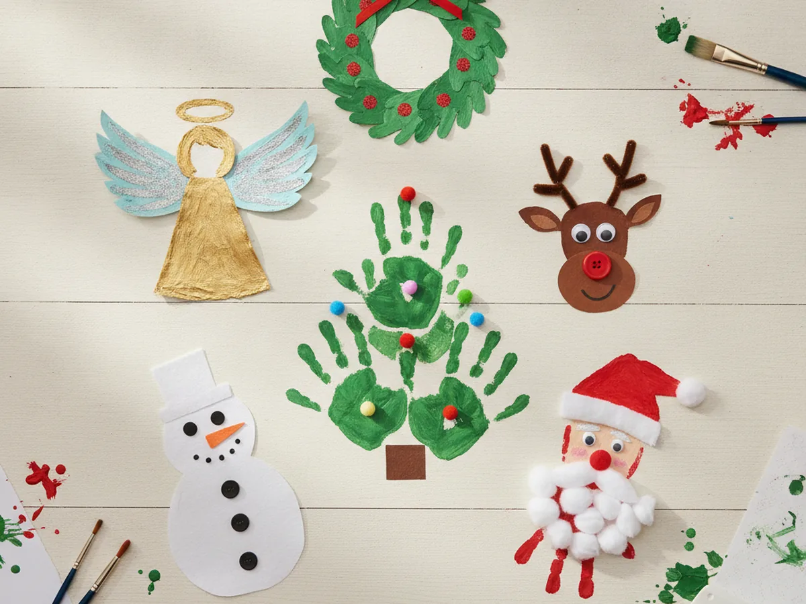
There is nothing quite like a tiny painted handprint to capture exactly how little your child is right now. These Christmas handprint crafts turn that sweet little hand into reindeer, snowmen, angels, and so much more, and every one becomes a keepsake you will want to pull out of the box year after year. Best of all, they are simple, forgiving, and made for cozy afternoons together. Grab a little paint and let's make some holiday magic. 🎄
What You'll Need
Most of these Christmas handprint crafts share the same short list of basics, so gather these once and you will be ready for nearly every idea below.
- Crayola washable kids paint, the star of every handprint and easy to wash off little hands.
- Construction paper, for colorful backgrounds, hats, scarves, and little details.
- Foam sponge brushes, the easiest way to coat a palm in smooth, even paint.
- Washable glue sticks, perfect for little hands and no sticky puddles to clean up.
- Kids safety scissors, blunt-tip and just right for small fingers.
- Self-adhesive googly eyes, the magic touch that brings every animal to life.
- Craft pom-poms, great for noses, beards, berries, and fluffy snow.
- Washable glitter glue, for a little sparkle on ornaments, mittens, and stockings.
- Cotton balls, for snowy beards, fluffy trims, and soft sheep wool.
- Baby wipes or a damp cloth, to keep painty hands under control between prints.
20 Easy Christmas Handprint Craft Ideas
1. Handprint Christmas Tree
Stacking green handprints into a leafy little tree is the perfect place to start with Christmas handprint crafts. Paint your child's hand green, press a few prints in a column with the fingers pointing down, and watch a full, branchy tree appear. Add a paper star on top and dot on tiny fingerprint ornaments to finish. It is so simple, yet it looks adorable taped to the fridge or framed on the wall.
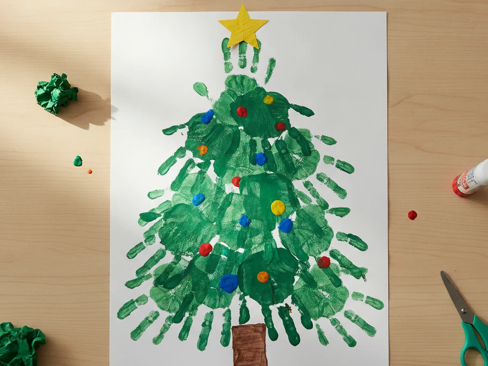
2. Handprint Reindeer
This one always gets giggles because the spread fingers become the silliest little antlers. Paint your child's hand brown, press it onto white paper, then add two googly eyes and a round red pom-pom nose right on the palm. In about a minute you have a cheerful reindeer that practically begs to be named Rudolph. It is one of those Christmas handprint crafts that feels like magic to a toddler. 🦌
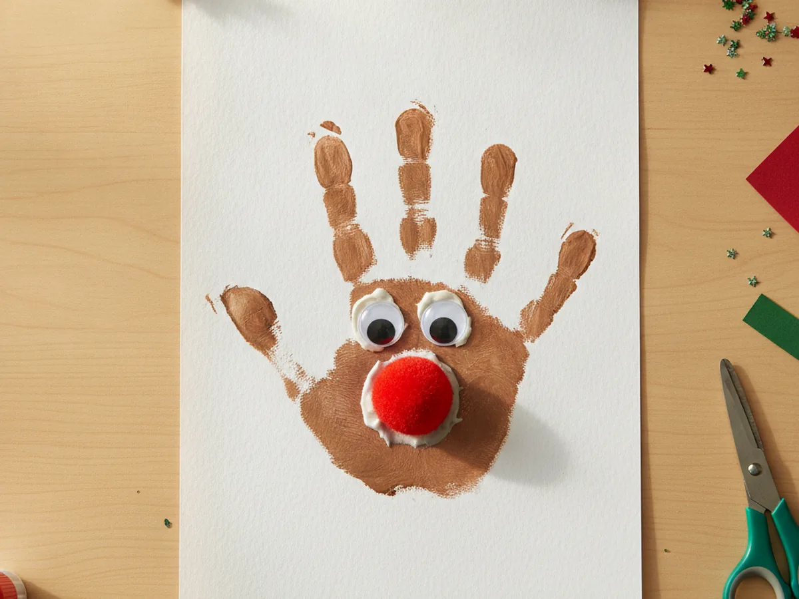
3. Handprint Santa Claus
Turn a handprint upside down and the four fingers become the perfect spot for Santa's fluffy beard. Paint the palm a soft peach for his face, glue cotton balls along the fingers, and top it with a little red triangle hat. Two small eyes and a rosy nose bring jolly old Saint Nick to life. Kids love that their own hand becomes the most famous beard of the season.
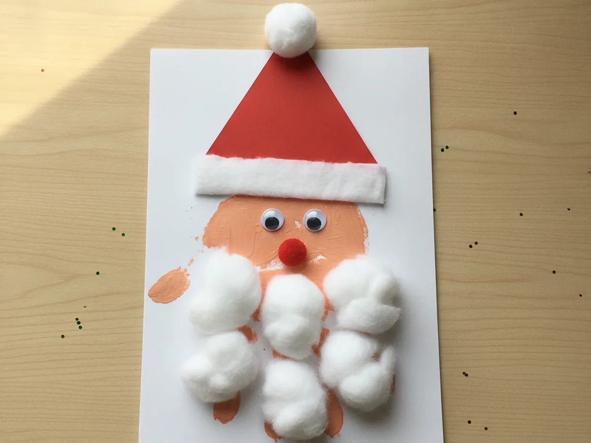
4. Handprint Snowman
A chubby white handprint snowman feels straight out of a snowy storybook. Paint your child's hand white, press it onto blue paper, and let the palm be the body while the thumb becomes a cheerful waving arm. Add a tiny orange paper nose, dot eyes and buttons, and a little paper hat and scarf. It is a gentle, low-fuss craft that even the youngest snow lovers can manage. ⛄
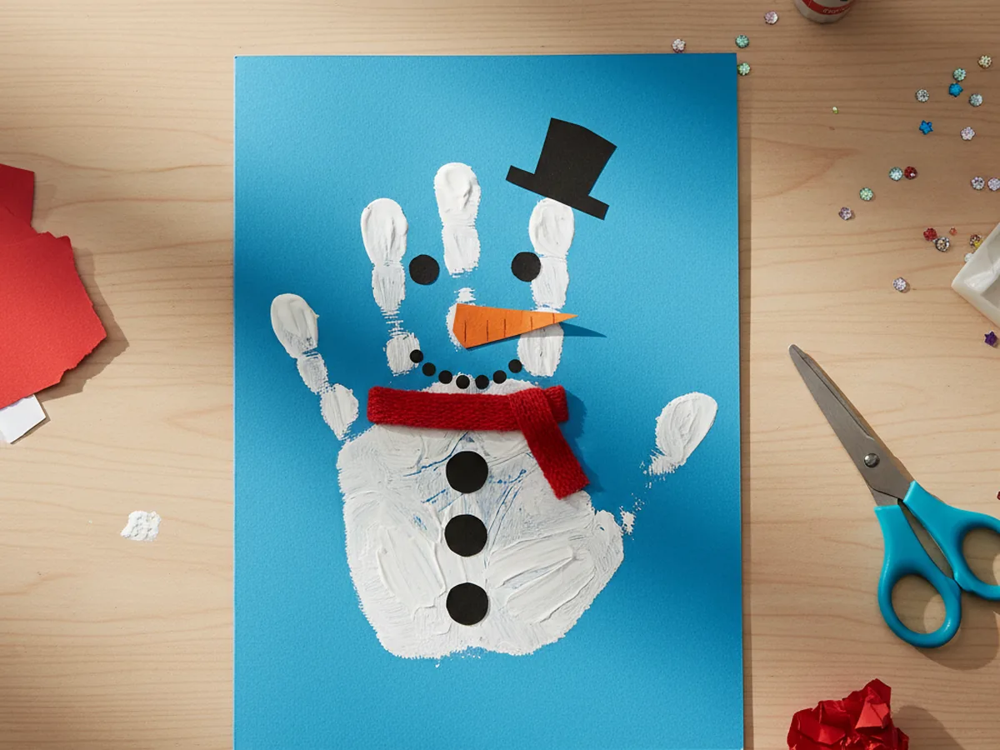
5. Handprint Christmas Angel
Two handprints placed back to back make the softest pair of angel wings. Press two white prints onto blue paper, add a simple paper cone body and a round head, then bend a gold pipe cleaner into a little halo. A few drawn details give her the sweetest face. This is one of the most heartfelt Christmas handprint crafts, and it looks beautiful perched on a shelf or tucked into a card for grandma.
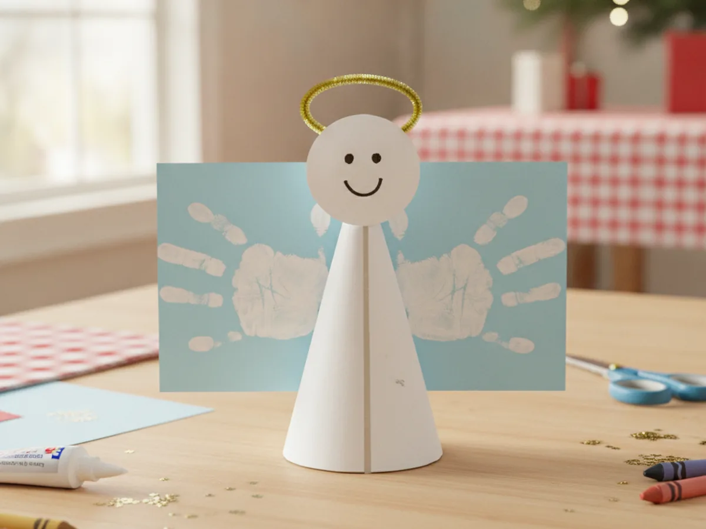
6. Handprint Christmas Wreath
A wreath made from many green handprints is a wonderful group project when siblings or cousins are visiting. Press print after print in a circle until you have a full, leafy ring, then dot on red fingerprint berries and add a paper bow at the bottom. Every hand that helped becomes part of the finished wreath, which makes it a treasured reminder of a happy, crowded craft table.
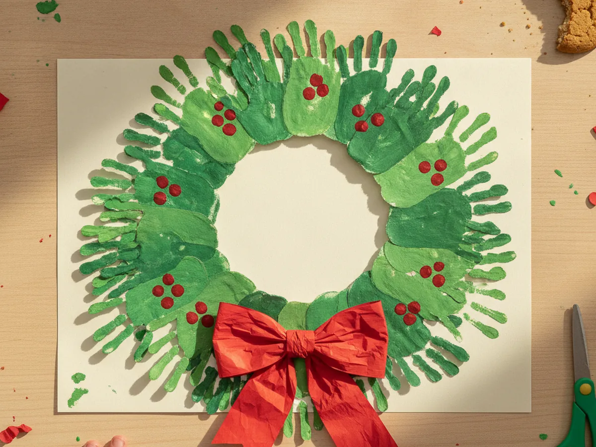
7. Handprint Penguin
A black handprint makes the roundest, most huggable little penguin. Press a black print onto light blue paper, glue on a white paper belly, and add an orange beak and feet. Two googly eyes and a tiny red scarf finish this chilly friend in no time. Penguins are always a favorite, and this one is simple enough for a quick afternoon craft.
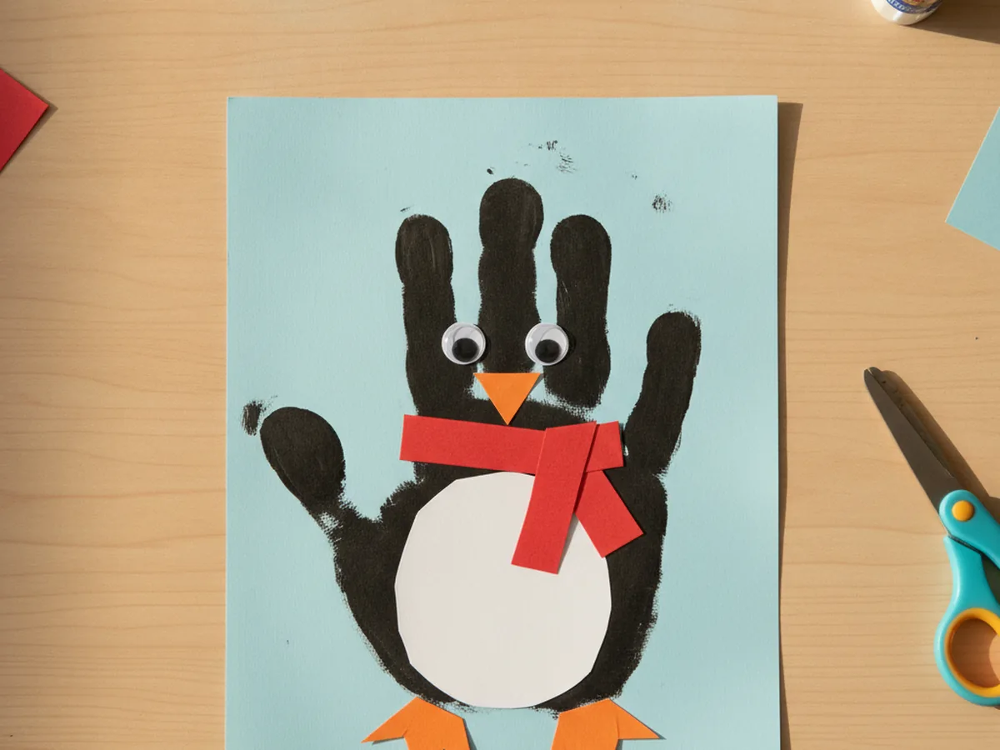
8. Handprint Christmas Lights
This clever idea turns little fingerprints into a string of glowing holiday bulbs. Draw a swooping black line across the paper for the cord, then let your child press colorful fingerprints all along it like dangling lights. Add a tiny base to each bulb with a marker and you have a cheerful strand that looks just like the lights on your own tree. It is a lovely low-mess option for busy days.
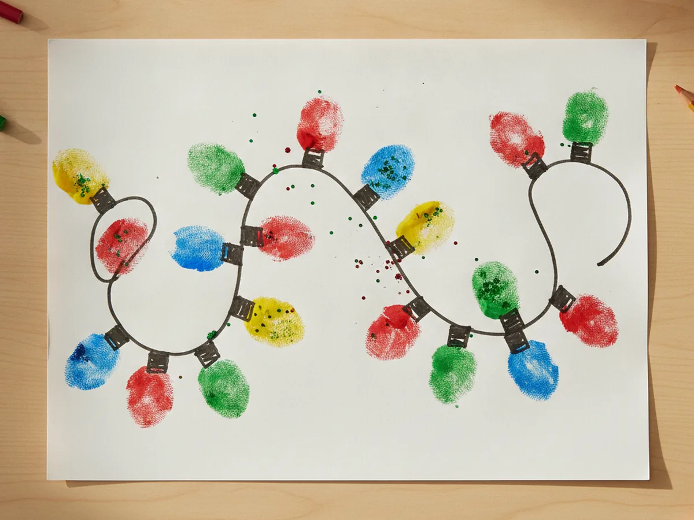
9. Handprint Poinsettia
Bright red handprints fan out into the prettiest paper poinsettia. Press several red prints in a starburst so the fingers form the pointed petals, then cluster a few yellow pom-poms in the middle. This festive flower looks far fancier than it is to make, which is exactly the kind of confidence boost a beginner crafter loves. It makes a gorgeous placemat or homemade card front.
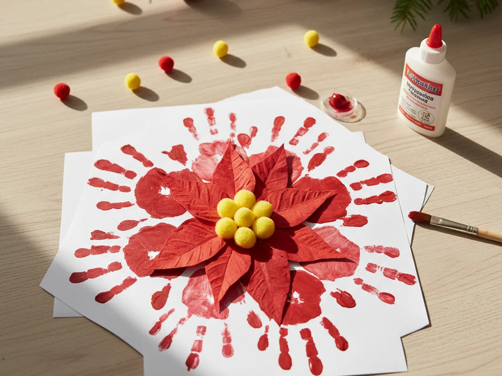
10. Handprint Candy Cane
Alternating red and white handprints curve into a sweet striped candy cane. Press the prints in a gentle hook shape, switching colors as you go, and tie on a little green paper bow near the top. The stripes never have to be perfect, which keeps this craft relaxed and fun. It is a cheerful way to practice patterns while making something festive together.
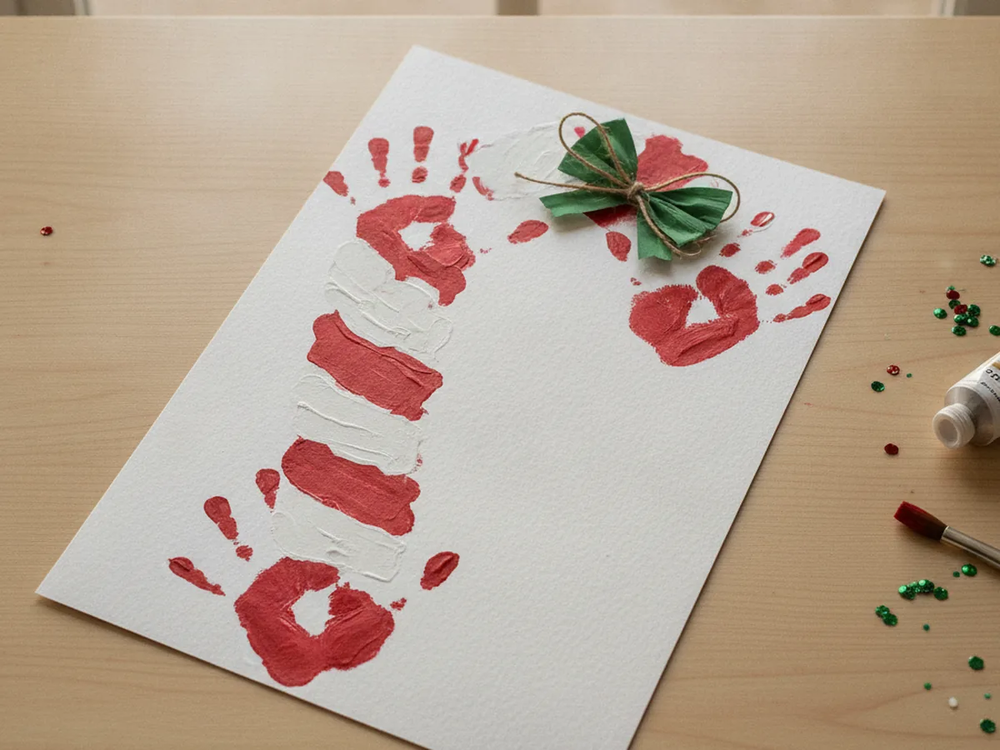
11. Handprint Elf
A peach handprint becomes one of Santa's cheerful little helpers with just a few add-ons. Use the palm as the elf's face, top it with a green and red striped paper hat and a pom-pom, and glue on two pointed paper ears. Add rosy cheeks and a big grin and your elf is ready for mischief. Kids adore giving their elf a name and a backstory of its own.
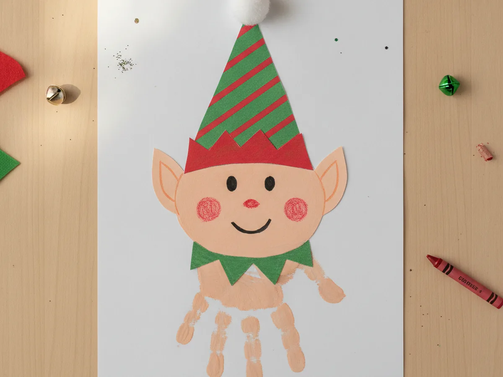
12. Handprint Mittens
Trace your child's hand twice on cozy red and green paper to make a matching pair of mittens. Cut them out, add a fluffy cotton cuff to each, and let your child decorate them with glitter glue snowflakes. Connect the two with a length of yarn just like real mittens on a string. This one doubles as a sweet keepsake of exactly how big those little hands were this winter.
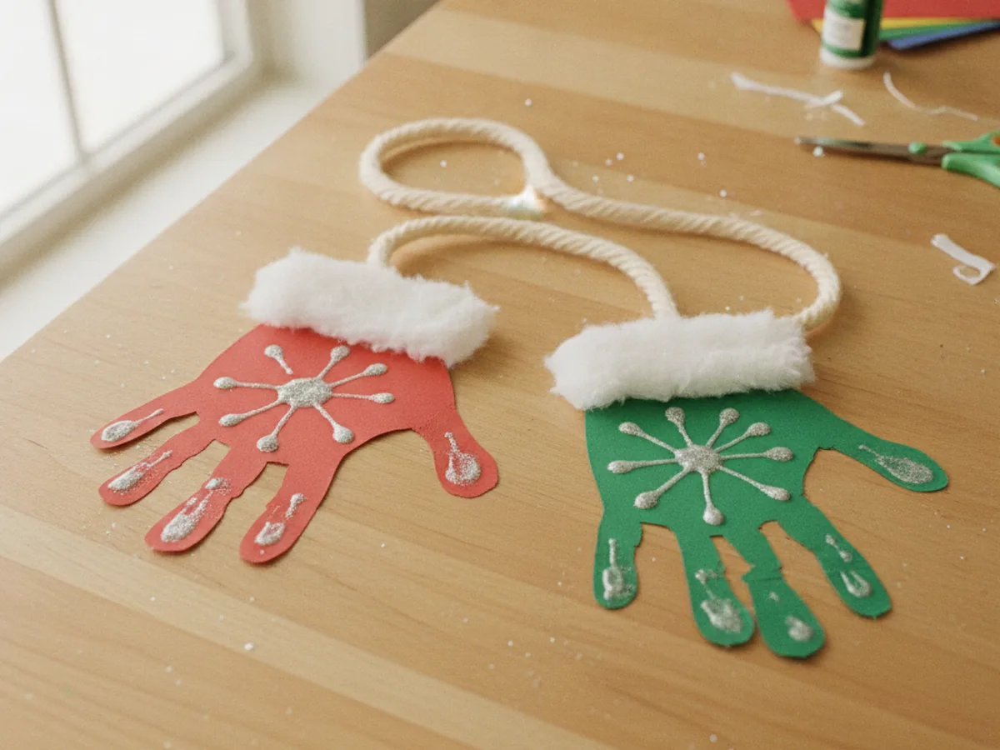
13. Handprint Christmas Stocking
Trace a hand and a bit of forearm to create the perfect L-shaped stocking. Cut it from red paper, glue a fluffy white cuff at the top, and let your child add glitter glue swirls and a little name tag. Hang the finished stocking on the wall or string several together for a homemade garland. It is a charming way to make every child their very own keepsake stocking.
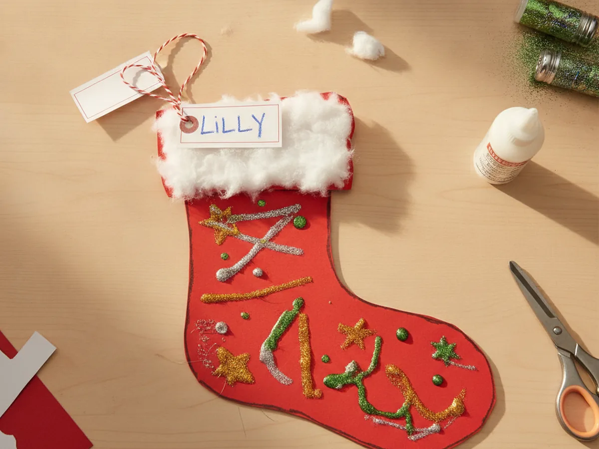
14. Handprint Holly and Berries
Two green handprints side by side make the classic pointed leaves of a holly sprig. Press the prints so the fingers fan out like leaves, then add a little cluster of red pom-pom or fingerprint berries in the center. It is a small, quick craft that looks lovely glued to a gift tag or the front of a handmade card. Sometimes the simplest Christmas handprint crafts are the most charming.
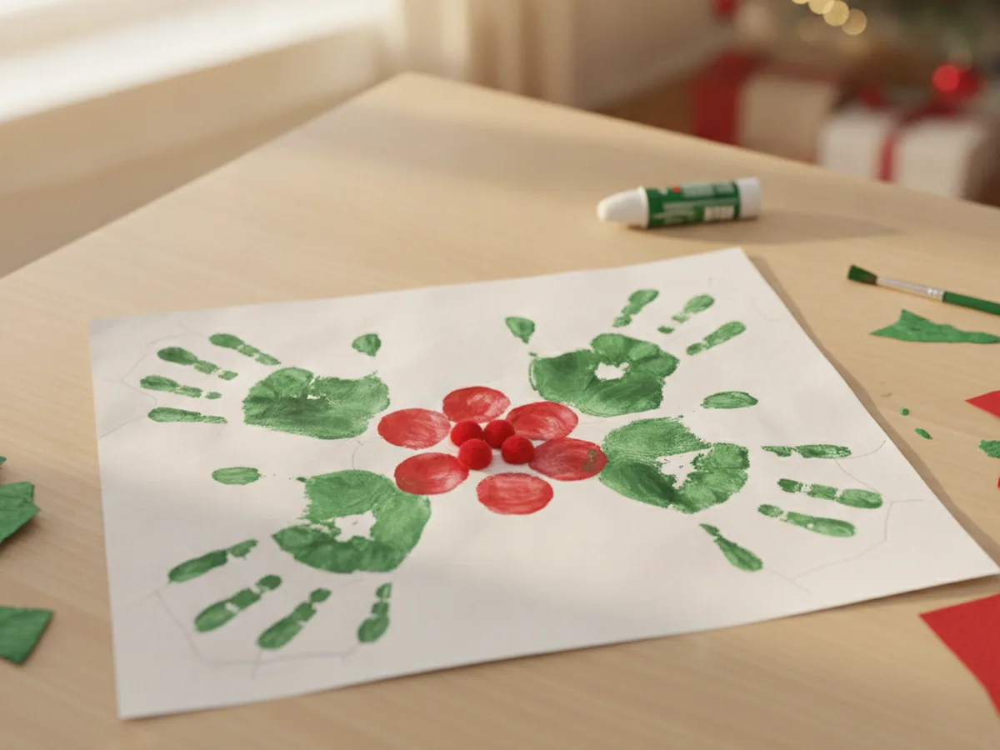
15. Handprint Polar Bear
A soft white handprint turns into the cuddliest polar bear. Press a white print onto light blue paper, then use the palm as the round head and body. Add two little paper ears, a black nose, and two friendly eyes. This gentle winter animal is wonderfully simple, and the snowy white paint feels extra special against a cool blue background.
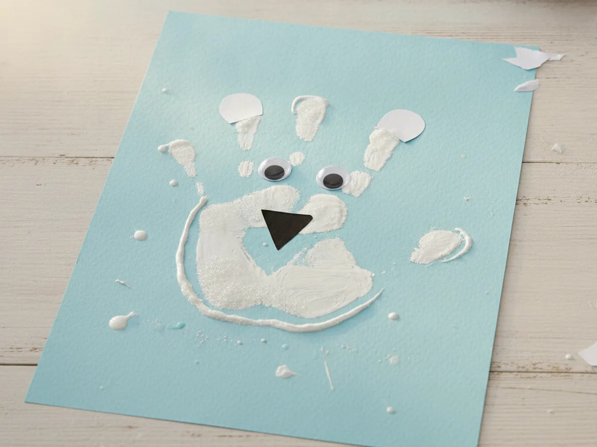
16. Handprint Gingerbread Man
A warm brown handprint makes the friendliest gingerbread man you ever did see. The palm becomes his round tummy, the thumb and fingers become his arms and legs, and a little white glue icing adds buttons and a zigzag smile. He looks good enough to eat and is a wonderful match for a snowy day of baking and crafting. Kids love decorating each one a little differently.
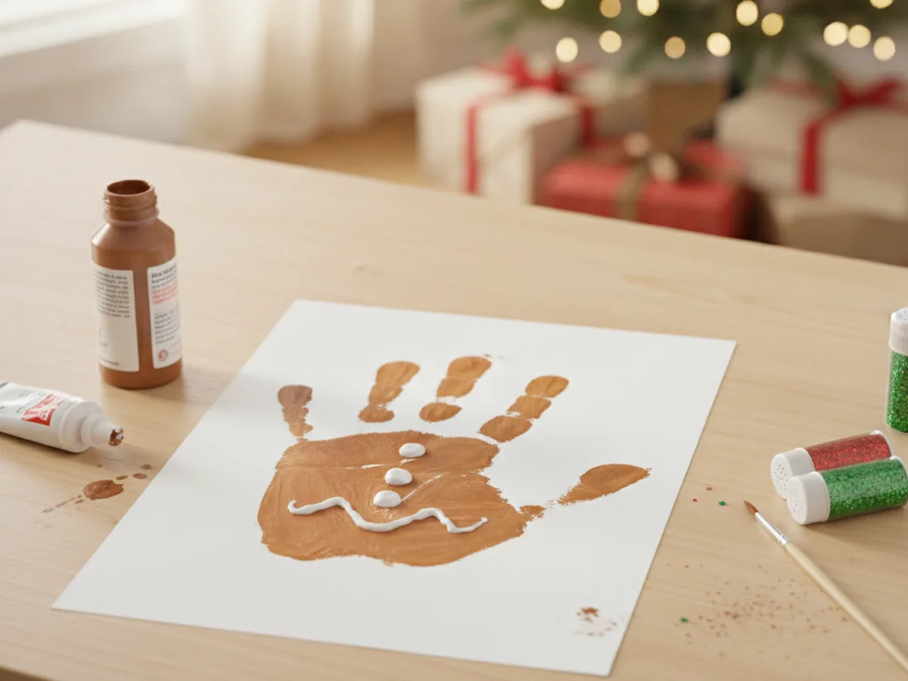
17. Handprint Christmas Card Keepsake
Fold a piece of cardstock and add a small green handprint tree to the front for a card that means so much more than a store-bought one. Let your child write a wobbly Merry Christmas inside, and tuck the date in a corner so you remember the year. Grandparents treasure these forever, and it costs almost nothing to make a whole batch. A handmade card is a gift in itself. 💌
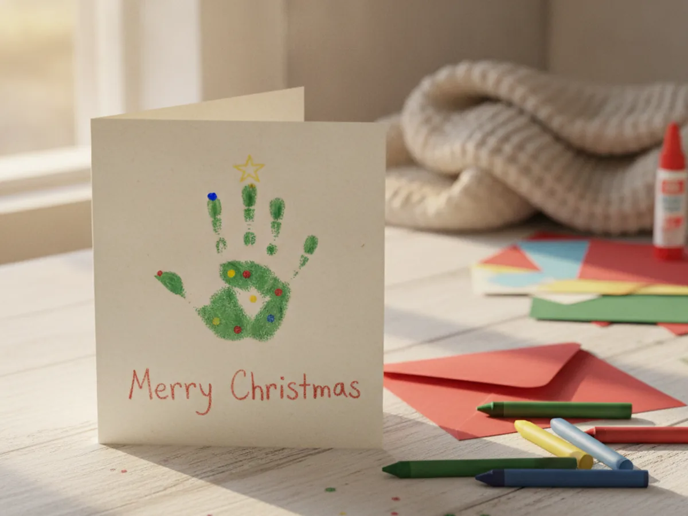
18. Handprint Dove
A single white handprint makes a graceful little peace dove. The palm becomes the body, the fingers fan into soft wing feathers, and the thumb becomes the head with a tiny paper beak. Add a small green olive branch for a sweet, gentle touch. This quiet, calming craft is a lovely choice when you want something peaceful and meaningful for the season.
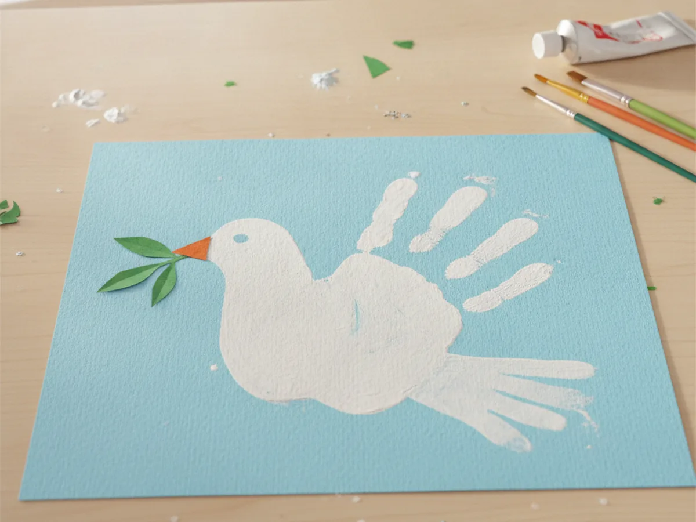
19. Salt Dough Handprint Ornament
For a keepsake that lasts for years, press your child's handprint into a round of homemade salt dough, poke a hole at the top, and let it dry hard. Once it is firm, paint a festive red and green border and thread a ribbon through to hang it. Every December you will hang it on the tree and marvel at how tiny that hand once was. It is the kind of ornament that brings a happy little lump to your throat. ❤️
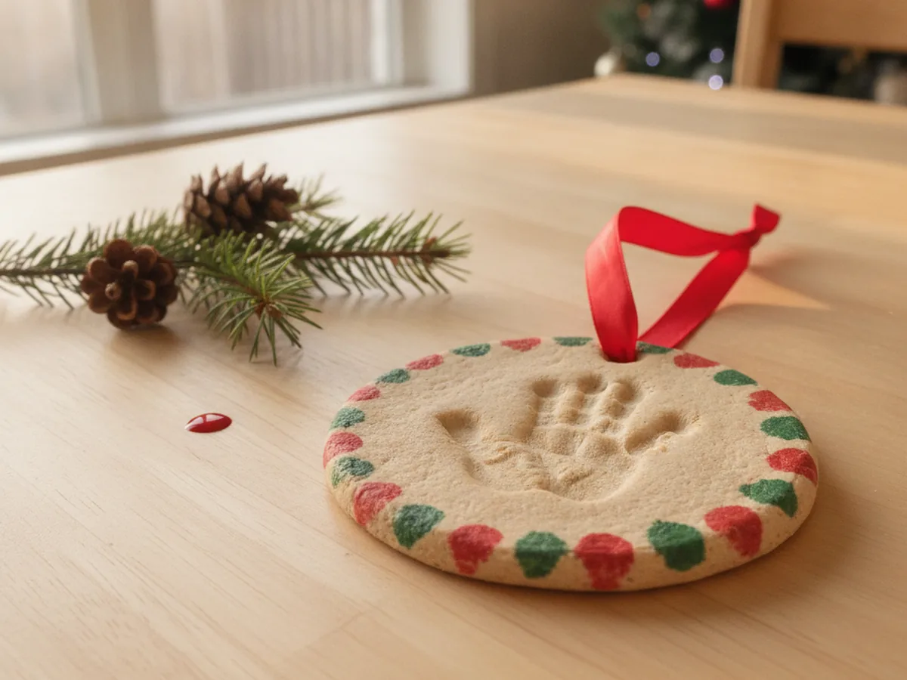
20. Handprint Nativity Sheep
End the list with a gentle little nativity sheep made from a white handprint. Press the print onto brown paper, dab on cotton or white paint for fluffy wool, and add a small head, ears, and four tiny legs. It is a soft, sweet way to bring a quiet piece of the Christmas story to the craft table. Make a few and you have a whole woolly flock to gather around a paper manger.
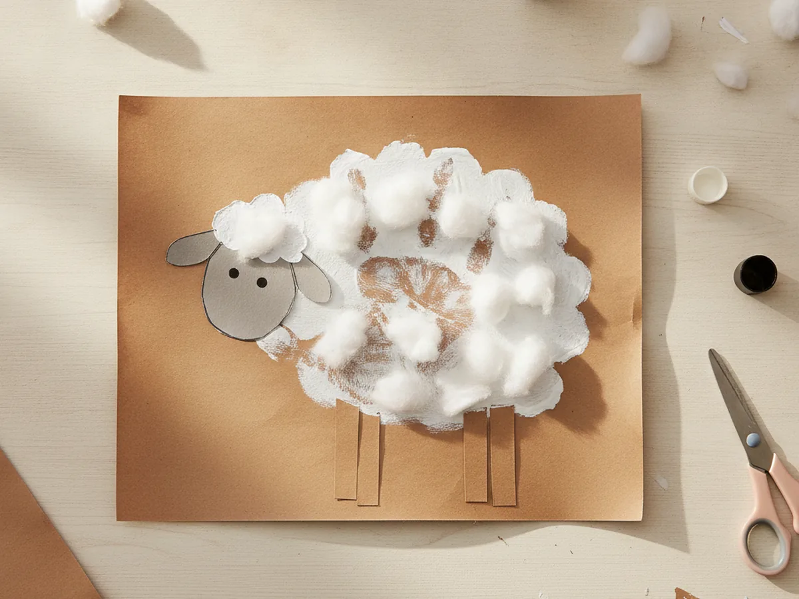
Final Thoughts
The best thing about Christmas handprint crafts is that they capture this exact moment in your child's life, the one that goes by far too fast. A little paint, a few cotton balls, and a slow afternoon together are all you need to make something your family will treasure long after the holidays. Pick just one idea to start, let your child lead, and do not worry about smudges or crooked stripes. Those happy imperfections are precisely what makes a handmade keepsake so dear.
More Crafts You'll Love
If your little ones are in a festive crafting mood, here are two more easy holiday roundups to try next.
However you paint, press, and decorate them, these little handprints are proof that the simplest crafts make the warmest holiday memories.